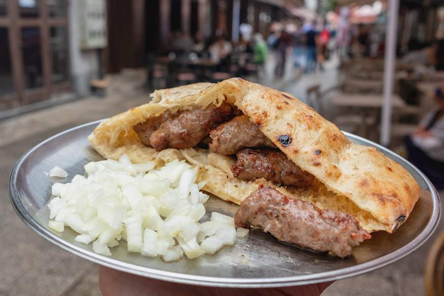

Ćevapi
Ćevapi, or ćevapčići, are homemade sausages traditional of the Balkans area.
This delicious street food made with mixed meats, is perfect for a party in your garden: tasty and easy to prepare thanks to simple ingredients.
Ingredients:
- 1 ½ pounds ground pork
- 1 pound lean ground beef
- ½ pound ground lamb
- 1 egg white
- 4 cloves garlic, minced
- 2 teaspoons ground black pepper
- 1 teaspoon salt
- 1 teaspoon baking soda
- 1 teaspoon cayenne pepper
- ½ teaspoon paprika
Preparation:
- Gather all ingredients
- Preheat an outdoor grill for medium heat and lightly oil the grate
- Combine ground pork, ground beef, ground lamb, and egg white in a large bowl
- Add garlic, black pepper, salt, baking soda, cayenne pepper, and paprika
- Mix well using your hands; form into finger-length sausages about 3/4-inch thick
- Cook sausages on the preheated grill, turning occasionally, until no longer pink in the center, about 30 minutes

Back to main page